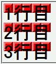
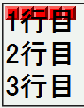

インライン要素に対して background-repeat:repeat-x; を指定すると、背景画像はインライン要素の1行目にあたる部分にしか表示されない。
<div> <span style="background-repeat:repeat-x; background-image:url(img02.png); font-size:200%;"> 1行目<br> 2行目<br> 3行目</span> </div>
span要素内はすべての行の上端に、横方向のみ繰り返しで背景画像が表示されるはずです。
Netscape7.1標準モード
WinIE6.0標準モード